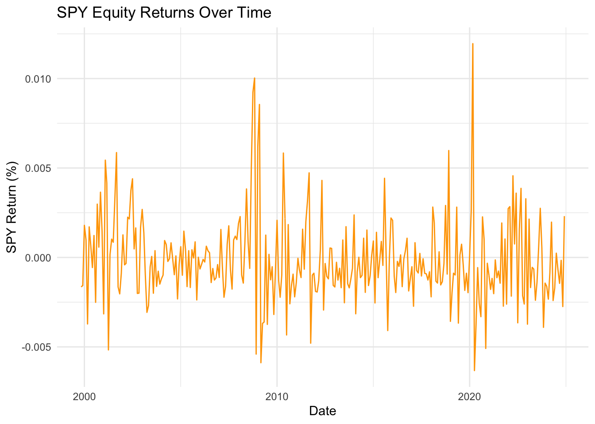
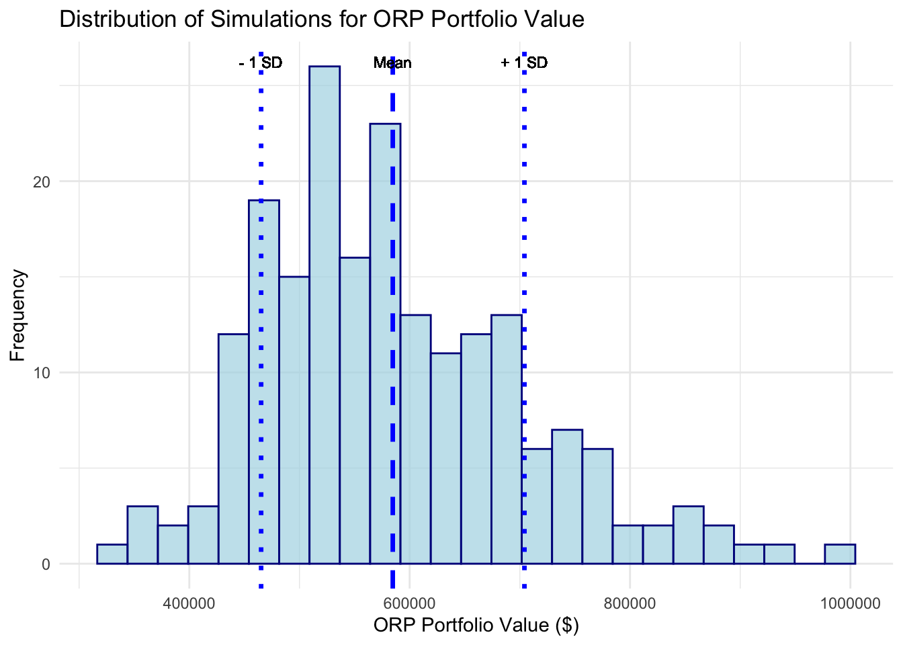

As a CUNY employee, you are presented with two retirement plan options: Teachers’ Retirement System (TRS) and Optional Retirement Plan (ORP). Both plans have distinct characteristics, and the best option depends on various factors, including your personal financial goals, investment preferences, and risk tolerance. Below, I will walk you through the key considerations for each plan and how they might work for you so that you can enjoy your retirement in the future.
Comparison: TRS vs. ORP
1. Teachers’ Retirement System (TRS) Overview
The TRS is a defined-benefit plan, meaning your retirement benefit is based on a formula related to your salary and years of service, rather than the market performance of your investments. The key features are:
Fixed Benefit: Your pension is a fixed amount that you receive monthly after retirement, based on your years of service and the final average salary (FAS).
Employer Takes the Risk: The CUNY system, as your employer, is responsible for ensuring that your pension is paid out, regardless of how the financial markets perform.
Inflation Adjustments: Your pension is typically adjusted for inflation every year, ensuring your purchasing power remains somewhat protected over time.
2. Optional Retirement Plan (ORP) Overview
The ORP is a defined-contribution plan, similar to a 401(k). In this plan, both you and CUNY make contributions to your individual retirement account, and the amount you have at retirement depends on several factors. Your ORP retirement benefit depends on:
Employee and Employer Contributions: These contributions are made throughout your career, generally a fixed percentage of your salary.
Investment Returns: The money is invested in mutual funds, and your retirement account grows based on the returns of those investments. Your return will depend on both the contributions and the market returns over your career. Given that the stock market can be volatile, your final portfolio value may fluctuate.
Right off the bat, based on the information above, we can compare the two plans on a theoretical level.
Predictability & Stability
TRS: Offers a fixed, predictable monthly income that is guaranteed by CUNY. You don’t have to worry about market volatility or having to manage your own investments. This can be comforting if you prefer stability in retirement.
ORP: The benefit is not guaranteed. It depends on market performance, meaning that if markets perform well, your retirement savings will grow, but if they perform poorly, you may face lower than expected retirement income.
Inflation Protection
TRS: Your pension will likely receive annual inflation adjustments, though they are capped. This means your income will keep up with inflation to some degree.
ORP: No built-in inflation protection. Your portfolio must grow at a rate that outpaces inflation, which may be challenging in a low-interest-rate environment.
Risk Tolerance
TRS: Low risk. The risk of market performance is carried by CUNY, not you.
ORP: Higher risk. Since it is based on market performance, your retirement income will be more volatile and dependent on your asset allocation and the financial markets.
Control and Flexibility
TRS: You have no control over your pension plan. Your monthly benefit is determined by a set formula.
ORP: You have full control over how your money is invested, which can lead to higher returns if you make the right choices. However, this also means you need to be actively involved in managing your retirement account.
Retirement Income
TRS: Provides a steady, predictable income for life, which can be helpful for budgeting in retirement.
ORP: Your retirement income is variable and can increase or decrease depending on the performance of your investments.
Historical Data
We will understand the two retirement plan options by leveraging historical data from FRED and Alpha Vantage. Specifically, we’ll focus on key metrics, such as wage growth, inflation rates, equity returns (from U.S. and international markets), and bond returns. The data sets I will be pulling are as follows:
Wage Growth and Inflation: Wage Growth: This represents the average increase in wages over time. It’s important because your retirement plan may be based on your income, and understanding the wage growth trend helps estimate how much your salary could rise during your career, which in turn impacts the amount you contribute to your retirement.
Inflation: Inflation impacts the purchasing power of your retirement savings. If inflation is high, your retirement income may lose value over time. By examining historical inflation trends, we can get a sense of how much inflation has eaten into savings over time, which helps us make adjustments to ensure your retirement savings grow enough to outpace inflation.
Market Returns: U.S. and International Equities (SPY & ACWI): U.S. Equities (SPY): The SPY ETF tracks the performance of the S&P 500, which represents large U.S. companies. Historically, equity markets have delivered strong returns over the long term, but they can be volatile in the short term. Knowing the historical return can help us predict how a stock-based retirement plan might perform.
International Equities (ACWI): The ACWI index tracks the performance of global markets, which provides diversification. International equities may perform differently than U.S. equities, and adding them to your retirement plan could reduce overall risk while improving returns.
Bonds and Debt Returns: Bonds Returns: Bonds are typically considered a safer, less volatile investment compared to equities. They can provide steady income and help balance the risk of a retirement portfolio.
Debt Returns: Short-term debt instruments like 3-month Treasury bills offer another low-risk investment option. These instruments typically have lower returns compared to bonds or equities, but they can be a good choice if you’re seeking safety and liquidity.
Code
# AlphaVantage: a commercial stock market data provideralpha_key <-readLines("AlphaVantage_key.txt")# FRED: the Federal Reserve Economic Data repositoryfred_key <-readLines("fred_key.txt")# Wage growth# FRED: AHETPI (Average Hourly Earnings of All Employees, Total Private)wage_url <-paste0("https://api.stlouisfed.org/fred/series/observations?series_id=AHETPI&api_key=", fred_key, "&file_type=json&frequency=m")wage_response <-request(wage_url) |>req_perform()wage_data <-resp_body_json(wage_response)[["observations"]]wage_df <-data.frame(date =sapply(wage_data, function(x) x$date),wage =sapply(wage_data, function(x) as.numeric(x$value)))wage_df$date <-as.Date(wage_df$date)# Inflation# FRED: CPIAUCSL (CPI for All Urban Consumers: U.S. City Average, All Items)inflation_url <-paste0("https://api.stlouisfed.org/fred/series/observations?series_id=CPIAUCSL&api_key=", fred_key, "&file_type=json&frequency=m")inflation_response <-request(inflation_url) |>req_perform()inflation_data <-resp_body_json(inflation_response)[["observations"]]inflation_df <-data.frame(date =sapply(inflation_data, function(x) x$date),inflation =sapply(inflation_data, function(x) as.numeric(x$value)))inflation_df$date <-as.Date(inflation_df$date)# Bond market total returns# FRED: GS10 (10-Year Treasury Constant Maturity Rate)bond_url <-paste0("https://api.stlouisfed.org/fred/series/observations?series_id=GS10&api_key=", fred_key, "&file_type=json&frequency=m")bond_response <-request(bond_url) |>req_perform()bond_data <-resp_body_json(bond_response)[["observations"]]bond_df <-data.frame(date =sapply(bond_data, function(x) x$date),bond_return =sapply(bond_data, function(x) as.numeric(x$value)))bond_df$date <-as.Date(bond_df$date)# Short-term debt returns7# FRED: DTB3 (3-Month Treasury Bill: Secondary Market Rate)debt_url <-paste0("https://api.stlouisfed.org/fred/series/observations?series_id=DTB3&api_key=", fred_key, "&file_type=json&frequency=m")debt_response <-request(debt_url) |>req_perform()debt_data <-resp_body_json(debt_response)[["observations"]]debt_df <-data.frame(date =sapply(debt_data, function(x) x$date),debt_return =sapply(debt_data, function(x) as.numeric(x$value)))debt_df$date <-as.Date(debt_df$date)# US Equity Market total returns# AlphaVantage: TIME_SERIES_DAILY# API Request for US Equity Market Returns (SPY)spy_url <-paste0("https://www.alphavantage.co/query?function=TIME_SERIES_DAILY&symbol=SPY&apikey=", alpha_key, "&outputsize=full&datatype=json")spy_response <-request(spy_url) |>req_perform()spy_data <-resp_body_json(spy_response)[["Time Series (Daily)"]]spy_df <-data.frame(date =as.Date(names(spy_data)),adj_close =sapply(spy_data, function(x) as.numeric(x[["4. close"]])))# Calculate daily returns based on the unadjusted close pricespy_df$daily_return <-c(NA, diff(spy_df$adj_close) /head(spy_df$adj_close, -1))spy_df <- spy_df[complete.cases(spy_df), ] # Remove rows with NA# International Equity Market total returns # All Country World Index# AlphaVantage: TIME_SERIES_DAILY_ADJUSTED# API Request for International Equity Market Returns:acwi_url <-paste0("https://www.alphavantage.co/query?function=TIME_SERIES_DAILY&symbol=ACWI&apikey=", alpha_key, "&outputsize=full&datatype=json")acwi_response <-request(acwi_url) |>req_perform()acwi_data <-resp_body_json(acwi_response)[["Time Series (Daily)"]]# Calculate daily returns based on adjusted closing priceacwi_df <-data.frame(date =as.Date(names(acwi_data)),adj_close =sapply(acwi_data, function(x) as.numeric(x[["4. close"]])))acwi_df$daily_return <-c(NA, diff(acwi_df$adj_close) /head(acwi_df$adj_close, -1))acwi_df <- acwi_df[complete.cases(acwi_df), ]
Code
# Ensure all data frames are on a monthly frequency (aggregate if necessary) # to have years of data but less granularitywage_df$date <-as.Date(wage_df$date)inflation_df$date <-as.Date(inflation_df$date)bond_df$date <-as.Date(bond_df$date)debt_df$date <-as.Date(debt_df$date)spy_df$date <-as.Date(spy_df$date)acwi_df$date <-as.Date(acwi_df$date)# Aggregate data to monthly frequencyWAGE <-aggregate(wage_df$wage, by =list(date =format(wage_df$date, "%Y-%m-01")), FUN = mean, na.rm =TRUE)INFLATION <-aggregate(inflation_df$inflation, by =list(date =format(inflation_df$date, "%Y-%m-01")), FUN = mean, na.rm =TRUE)BOND <-aggregate(bond_df$bond_return, by =list(date =format(bond_df$date, "%Y-%m-01")), FUN = mean, na.rm =TRUE)DEBT <-aggregate(debt_df$debt_return, by =list(date =format(debt_df$date, "%Y-%m-01")), FUN = mean, na.rm =TRUE)# Aggregate SPY and ACWI data to monthly frequency (from daily data)SPY <-aggregate(spy_df$daily_return, by =list(date =format(spy_df$date, "%Y-%m-01")), FUN = mean, na.rm =TRUE)ACWI <-aggregate(acwi_df$daily_return, by =list(date =format(acwi_df$date, "%Y-%m-01")), FUN = mean, na.rm =TRUE)WAGE$date <-as.Date(WAGE$date)INFLATION$date <-as.Date(INFLATION$date)BOND$date <-as.Date(BOND$date)DEBT$date <-as.Date(DEBT$date)SPY$date <-as.Date(SPY$date)ACWI$date <-as.Date(ACWI$date)# Rename columns to avoid duplicatesWAGE <- WAGE |>rename(wage = x)INFLATION <- INFLATION |>rename(CPI = x)SPY <- SPY |>rename(equity_return_SPY = x)ACWI <- ACWI |>rename(equity_return_ACWI = x)BOND <- BOND |>rename(bond_return = x)DEBT <- DEBT |>rename(debt_return = x)WAGE <- WAGE |>mutate(wage_growth_percent = (wage -lag(wage)) /lag(wage)) INFLATION <- INFLATION |>mutate(inflation_rate = (CPI -lag(CPI)) /lag(CPI))# Merge all dataframes into one combined datasetcombined_data <-reduce(list(WAGE, INFLATION, SPY, ACWI, BOND, DEBT), function(x, y) merge(x, y, by ="date", all =TRUE))
Code
ggplot(WAGE, aes(x = date, y = wage_growth_percent)) +geom_line(color ="lightblue") +labs(title ="Wage Growth Over Time", x ="Date", y ="Wage Growth (%)") +theme_minimal()ggplot(INFLATION, aes(x = date, y = inflation_rate)) +geom_line(color ="red") +labs(title ="Inflation Rate Over Time", x ="Date", y ="Inflation Rate (%)") +theme_minimal()ggplot(BOND, aes(x = date, y = bond_return)) +geom_line(color ="green") +labs(title ="Bond Returns Over Time", x ="Date", y ="Bond Return (%)") +theme_minimal()ggplot(DEBT, aes(x = date, y = debt_return)) +geom_line(color ="purple") +labs(title ="Debt Returns Over Time", x ="Date", y ="Debt Return (%)") +theme_minimal()ggplot(SPY, aes(x = date, y = equity_return_SPY)) +geom_line(color ="orange") +labs(title ="SPY Equity Returns Over Time", x ="Date", y ="SPY Return (%)") +theme_minimal()ggplot(ACWI, aes(x = date, y = equity_return_ACWI)) +geom_line(color ="brown") +labs(title ="ACWI Equity Returns Over Time", x ="Date", y ="ACWI Return (%)") +theme_minimal()

Historical Averages: Why is this important? If inflation outpaces wage growth, the real purchasing power of your retirement benefits could decrease. A retirement plan with a benefit that is tied to inflation (or adjusts for inflation) might be more beneficial in this case.If your retirement plan includes investments in short-term debt instruments, it might offer more security, particularly in uncertain economic times.
long_run_data <- combined_data|>select( wage_growth_percent, inflation_rate, equity_return_SPY, equity_return_ACWI, bond_return, debt_return ) |>pivot_longer(cols =everything(), names_to ="Variable", values_to ="Value")ggplot(long_run_data, aes(x ="", y = Value)) +geom_boxplot() +facet_wrap(~ Variable, scales ="free_y") +# Facets for each variable with independent y-axis scaleslabs(title ="Boxplot of Financial Variables", x ="", y ="Values") +theme_minimal() +theme(axis.text.x =element_blank())
Correlation of Assets: A key part of portfolio management is diversification, or spreading investments across different asset classes to reduce risk. Understanding how different assets (e.g., equities, bonds, inflation, and wage growth) are correlated is critical in this process.
By looking at the correlation heatmap, we can see how the returns of stocks (both U.S. and international), bonds, and inflation interact. For instance, if equities and bonds are negatively correlated, you might want to have both in your portfolio to reduce risk. For example, if stock returns (SPY and ACWI) and bond returns are negatively correlated, this means that when stocks perform poorly, bonds might perform better, helping to cushion the impact of a downturn in the equity market.
Code
cor_matrix <-cor(combined_data[, -1], use ="complete.obs")correlation_heatmap <- cor_matrix|>as_tibble(rownames ="variable1") |>pivot_longer(cols =-variable1, names_to ="variable2", values_to ="correlation")ggplot(correlation_heatmap, aes(x = variable1, y = variable2, fill = correlation)) +geom_tile(color ="white") +scale_fill_gradient2(low ="blue", high ="red", mid ="white", midpoint =0) +labs(title ="Correlation Heatmap",x ="Variable", y ="Variable", fill ="Correlation") +theme_minimal() +theme(axis.text.x =element_text(angle =45, hjust =1))
Long Run Averages Portfolio Value Calculations
First, I will be using long run averages calculated above for the two retirement plans.
TRS: traditional pension plan: after retirement, the employer pays employees a fraction of their salary until death. aka “defined-benefit plan”
benefit is fixed - employer takes the market risk
If the market underperforms expectations, CUNY has to “pony up” and make up the gap - If the market overperforms expectations, CUNY pockets the excess balance.
Your pension will not be based on the contributions you paid into the system.3
# Visualizing salary growth over the next 20 yearsggplot(salary_data, aes(x = date, y = salary)) +geom_line(color ="darkgreen", size =1) +labs(title ="Salary Growth Over 20 Years",x ="Year",y ="Salary ($)",subtitle =paste("Starting Salary:", initial_salary, "with 20 Years of Wage Growth") ) +theme_minimal()
Contribution Based on Last 3 Years of Salary The TRS pension benefit is based on your final average salary (FAS), which is determined by the average salary over the last three years of employment.
ORP: closer to a 401k plan, employee and employer make contribution to retirement account that is invested in mutual funds. aka “defined-contribution plan” - only contribution is fixed - depends on market performance
Contribution Rate The employee’s contribution is based on their salary, and the employer contributes a fixed percentage based on years of service. We will be following the Fidelity Freedom Fund distribution of funds for your contributions. The allocation of funds between equities (both domestic and international), bonds, and short-term debt changes as you age.
Code
orp_contribution_rate <-function(salary) {if (salary <=45000) return(0.03)elseif (salary <=55000) return(0.035)elseif (salary <=75000) return(0.045)elseif (salary <=100000) return(0.0575)elsereturn(0.06)}employee_contrib_rate <-function(salary) {return(salary *orp_contribution_rate(salary))}# US Equitiesus_equities_rate <-function(age) {if (age >=25&& age <=49) {return(0.54) } elseif (age >=50&& age <=59) {return(0.47) } elseif (age >=60&& age <=74) {return(0.34) } elseif (age >=75) {return(0.19) } else {return(NA) }}# International Equitiesinternational_equities_rate <-function(age) {if (age >=25&& age <=49) {return(0.36) } elseif (age >=50&& age <=59) {return(0.32) } elseif (age >=60&& age <=74) {return(0.23) } elseif (age >=75) {return(0.13) } else {return(NA) }}# Bondsbonds_rate <-function(age) {if (age >=25&& age <=49) {return(0.10) } elseif (age >=50&& age <=59) {return(0.21) } elseif (age >=60&& age <=74) {return(0.43) } elseif (age >=75) {return(0.62) } else {return(NA_real_) }}# Short Term Debtshort_term_debt_rate <-function(age) {if (age >=75) {return(0.06) # Short-term debt only applies to age 75+ } else {return(0.00) # No short-term debt allocation for ages below 75 }}# Fixed Employer Contribution at 7 yearsemployer_contrib_rate <-function(years) {if (years <=7) return(0.08)elsereturn(0.10)}
Calculate for ORP This function simulates the growth of your ORP account based on contributions, salary increases, and asset allocation.
# Monthly TRS Benefit (assuming TRS benefit is paid monthly)ggplot(portfolio_value_at_retirement, aes(x = Year, y = Portfolio_Value)) +geom_line(color ="blue", size =1) +labs(title ="Portfolio Value Growth Over Time",x ="Age",y ="Portfolio Value ($)",subtitle =paste("Initial Salary: $", initial_salary, "Years of Service: ", years_of_service) ) +theme_minimal() +scale_y_continuous(labels = scales::comma)
Comparison of TRS and ORP First Month Retirement Benefits
Here we compare the first month’s retirement benefit from both plans. TRS First Month Retirement Benefit The first month retirement benefit for TRS is calculated by dividing the total annual pension by 12 months. ORP First Month Retirement Benefit After retirement, the ORP monthly benefit can be calculated based on a 4% withdrawal rate, which is typical for sustainable withdrawals.
Code
# 2. **ORP: Calculate Portfolio Value at Retirement**# the first month’s payout is typically a 4% withdrawal rate# Sustainable withdrawal rate (e.g., 4% annually, which is 0.33% monthly)final_portfolio_value <- portfolio_value_at_retirement$Portfolio_Value[nrow(portfolio_value_at_retirement)]orp_monthly_withdrawal <- final_portfolio_value *0.04/12comparison_table_gt <-tibble(Plan =c("TRS", "ORP"),First_Month_Retirement_Value =c(trs_monthly_benefit, orp_monthly_withdrawal)) |>gt() |>tab_header(title ="Comparison of TRS and ORP for First Month of Retirement" ) |>cols_label(Plan ="Retirement Plan",First_Month_Retirement_Value ="First_Month_Retirement_Value" ) |>fmt_currency(columns =vars(First_Month_Retirement_Value),currency ="USD",use_seps =TRUE,decimals =0 )comparison_table_gt
Comparison of TRS and ORP for First Month of Retirement
Retirement Plan
First_Month_Retirement_Value
TRS
$2,637
ORP
$2,434
Long Run Averages Retirement Calculations
TRS Withdrawals After Retirement
The TRS pension offers a steady, inflation-adjusted income during retirement. This income increases each year based on inflation, but the increase is capped at 3% annually. The adjustment is effective every September, using the Consumer Price Index (CPI) of the previous 12 months to calculate the inflation rate. Inflation Adjustement To simulate the TRS benefit after retirement, we adjust the pension payments based on inflation. The adjustment is capped at 3% annually. The inflation adjustement is effective each September and the CPI used is the aggregate monthly CPI of the previous 12 months.
The following code simulates the pension payments over a 20-year retirement period. The pension increases annually based on the average inflation rate of the previous 12 months, adjusted according to the rules described above. The result provides insight into how TRS can help preserve purchasing power over the long term.
Code
# TRS# Set the number of retirement years# TRS Monthly Benefit Calculation# Function to calculate inflation adjustment based on CPIinflation_adjustment <-function(CPI) { adjustment <-round(CPI *0.5, 1) # 50% of CPI increase, rounded to nearest 0.1%if (adjustment <0.01) adjustment <-0.01# Floor at 1%if (adjustment >0.03) adjustment <-0.03# Cap at 3%return(adjustment)}# Simulating pension benefit with inflation adjustmentssimulate_trs_with_inflation <-function(initial_pension, inflation_data, retirement_date, end_date) { retirement_benefit <-numeric(total_years *12) retirement_benefit[1] <- initial_pension current_pension <- initial_pensionfor (current_month in2:length(retirement_benefit)) { current_date <-seq(retirement_date, length.out =length(retirement_benefit), by ="month")[current_month]# The inflation adjustment is effective each Septemberif (format(current_date, "%m") =="09") { inflation_data_recent <- inflation_data[inflation_data$date < current_date,] last_12_months_inflation <-tail(inflation_data_recent$inflation_rate, 12) avg_inflation <-mean(last_12_months_inflation) adjustment <-inflation_adjustment(avg_inflation) current_pension <- current_pension * (1+ adjustment) } retirement_benefit[current_month] <- current_pension }return(retirement_benefit)}# using past infation rates due to data availability# TRS benefit is assumed to be a fixed percentage of the employee's final salarymonthly_trs_pension <- trs_benefit /12retirement_date <-as.Date("2020-10-01")end_date <-as.Date("2024-10-01")total_years <-20trs_income_stream <-simulate_trs_with_inflation(monthly_trs_pension, INFLATION, retirement_date, end_date)# Print the total amount received over 20 yearstotal_received <-sum(trs_income_stream)cat("Total amount received over 20 years: $", round(total_received, 2), "\n")
With the ORP, the employee builds a retirement portfolio over their working years and begins drawing down funds after retirement. The amount withdrawn each year is typically a percentage of the portfolio value, with a common recommendation being 4% annually. In addition to withdrawals, the remaining portfolio continues to grow during retirement at an assumed annual return of 3%. This growth helps maintain the portfolio balance and ensures that funds last throughout retirement. The following code simulates the withdrawals from the ORP portfolio over a 20-year retirement period. The initial portfolio value is based on the employee’s salary, years of service, and contributions. The code assumes an annual withdrawal of 4% and a 3% annual growth rate.
# Print resultscat("Portfolio value at retirement: $", round(tail(portfolio_value_at_retirement$Portfolio_Value, 1), 2), "\n")
Portfolio value at retirement: $ 730119.4
Code
cat("Total withdrawals over retirement: $", round(sum(withdrawals_data$Withdrawals), 2), "\n")
Total withdrawals over retirement: $ 525932.3
Comparison of Withdrawals After Retirement
Since ORP is withdrawn annually, to compare it with the monthly TRS withdrawals, below, I am displaying ORP withdrawals on a month to month basis. Monthly Income/Withhdrawal (TRS vs ORP)
Code
years_retired =20withdrawals_data_monthly <-data.frame(Month =seq.Date(from =as.Date("2020-01-01"), by ="month", length.out = years_retired *12),Withdrawals =rep(withdrawals_data$Withdrawals /12, each =12), Portfolio_Balance =rep(withdrawals_data$Portfolio_Balance, each =12) )combined_df <-merge(withdrawals_data_monthly, trs_income_df, by ="Month")ggplot(combined_df, aes(x = Month)) +geom_line(aes(y = Withdrawals, color ="Monthly Withdrawals"), size =1) +geom_line(aes(y = Pension_Benefit, color ="Monthly Pension Benefit"), size =1) +scale_y_continuous(name ="Amount ($)") +labs(title ="Monthly ORP Withdrawals vs TRS Pension Benefit",x ="Months After Retirement",y ="Monthly Withdrawals / Pension Benefit ($)") +theme_minimal() +theme(axis.text.x =element_text(angle =45, hjust =1)) +scale_color_manual(values =c("Monthly Withdrawals"="blue", "Monthly Pension Benefit"="brown"))
Code
avg_trs_income <-mean(trs_income_df$Pension_Benefit)avg_orp_income <-mean(withdrawals_data$Withdrawals)/12average_income_table <-tibble(Retirement_Plan =c("TRS", "ORP"),Average_Monthly_Income =c(round(avg_trs_income, 2), round(avg_orp_income, 2)))average_income_table_gt <- average_income_table |>gt() |>tab_header(title ="Average Monthly Income for TRS and ORP" ) |>cols_label(Retirement_Plan ="Retirement Plan",Average_Monthly_Income ="Average Monthly Income ($)" ) |>fmt_currency(columns =vars(Average_Monthly_Income),currency ="USD",use_seps =TRUE,decimals =2 )average_income_table_gt
Average Monthly Income for TRS and ORP
Retirement Plan
Average Monthly Income ($)
TRS
$2,905.74
ORP
$2,191.38
Maximum and Minimum Gap in Monthly Income (TRS vs ORP) The maximum gap represents the largest difference where TRS income was higher than ORP income. The minimum gap represents the largest difference where ORP income was higher than TRS income (a negative value indicates ORP is higher).
Code
# Calculate monthly income gap between TRS and ORP for each yeartrs_monthly_income <- trs_income_df$Pension_Benefitorp_monthly_income <- withdrawals_data$Withdrawals# Ensure both vectors are of the same length (use the same years for both plans)common_years <-min(length(trs_monthly_income), length(orp_monthly_income))monthly_gap <-abs(trs_monthly_income[1:common_years] - orp_monthly_income[1:common_years])# Maximum and minimum gapmax_gap <-max(monthly_gap)min_gap <-min(monthly_gap)cat("Maximum gap in monthly income between TRS and ORP: $", round(max_gap, 2), "\n")
Maximum gap in monthly income between TRS and ORP: $ 26567.67
Code
cat("Minimum gap in monthly income between TRS and ORP: $", round(min_gap, 2), "\n")
Minimum gap in monthly income between TRS and ORP: $ 20914.94
Monte Carlo Analysis
In this section, we will compare the TRS and ORP retirement plans using Monte Carlo simulations. Both plans are simulated based on historical data.
TRS Simulation
Key Assumptions: - Salary growth: Simulated using historical wage growth data. - Inflation: Applied annually to adjust pension payments. - Inflation-adjusted benefits: We simulate TRS benefits with a 3% maximum annual inflation increase.
Code
set.seed(123) # For reproducibilityn_simulations <-200# TRS Simulationsimulate_trs_monte_carlo <-function(n_simulations, initial_salary, years_worked, wage_growth_data, inflation_data) { wage_growth_data <-na.omit(wage_growth_data) inflation_data <-na.omit(inflation_data) results <-numeric(n_simulations) for (sim in1:n_simulations) { salary <- initial_salary salaries <-numeric(years_worked) retirement_benefit <-numeric(years_worked *12) # Salary growthfor (i in1:years_worked) { growth_rate <-sample(wage_growth_data$wage_growth_percent, 1) inflation_rate <-sample(inflation_data$inflation_rate, 1) salary <- salary * (1+ growth_rate + inflation_rate) salaries[i] <- salary }# Calculate Final Average Salary (FAS) based on the last 3 years of salary final_average_salary <-mean(tail(salaries, 3)) trs_benefit <-retirement_benefit(years_worked, final_average_salary) current_pension <- trs_benefit retirement_benefit_monthly <- trs_benefit /12 retirement_benefit[1] <- trs_benefitfor (current_month in2:(years_worked *12)) { current_year <-ceiling(current_month /12) current_month_in_year <- current_month %%12if (current_month_in_year ==0) current_month_in_year <-12if (current_month_in_year ==9) { # The inflation adjustment is effective each September sampled_inflation <-sample(inflation_data$inflation_rate, 12, replace =TRUE) mean_inflation <-mean(sampled_inflation) adjustment <-inflation_adjustment(mean_inflation) current_pension <- current_pension * (1+ adjustment) } retirement_benefit[current_month] <- current_pension } results[sim] <-sum(retirement_benefit) }return(results)}starting_salary <-50000years_worked <-20n_simulations <-200# Run the simulationtrs_results <-simulate_trs_monte_carlo(n_simulations, starting_salary, years_worked, WAGE, INFLATION)mean_trs_benefit <-mean(trs_results)median_trs_benefit <-median(trs_results)quantiles_trs_benefit <-quantile(trs_results, c(0.25, 0.75))# Print the resultscat("Mean TRS Benefit: $", mean_trs_benefit, "\n")
cat("25th and 75th Percentiles of TRS Benefit: $", quantiles_trs_benefit, "\n")
25th and 75th Percentiles of TRS Benefit: $ 5164768 5285646
Code
mean_result <-mean(trs_results)sd_result <-sd(trs_results)options(scipen =999)trs_results_df <-data.frame(trs_benefit = trs_results)ggplot(trs_results_df, aes(x = trs_benefit)) +geom_histogram(bins =25, fill ="lightblue", color ="darkblue", alpha =0.7) +geom_vline(aes(xintercept =mean(trs_benefit)), color ="blue", linetype ="dashed", size =1.2) +geom_vline(aes(xintercept =mean(trs_benefit) -sd(trs_benefit)), color ="blue", linetype ="dotted", size =1.2) +geom_vline(aes(xintercept =mean(trs_benefit) +sd(trs_benefit)), color ="blue", linetype ="dotted", size =1.2) +geom_text(aes(x =mean(trs_benefit), y =0.2, label =paste("Mean")), color ="black", vjust =-45, size =3) +geom_text(aes(x =mean(trs_benefit) -sd(trs_benefit), y =0.2, label =paste("- 1 SD")), color ="black", vjust =-45, size =3) +geom_text(aes(x =mean(trs_benefit) +sd(trs_benefit), y =0.2, label =paste("+ 1 SD")), color ="black", vjust =-45, size =3) +labs(title ="Distribution of Simulations for TRS Benefit",x ="TRS Benefit ($)",y ="Frequency" ) +theme_minimal()
ORP Contribution Simulation
Key Assumptions: - Employee and Employer Contributions: Contributions are based on salary and a specified contribution rate. - Asset Allocation: The portfolio grows based on a mix of equities, bonds, and other assets. This mix changes based on the employee’s age. - Investment Returns: Simulated using historical returns from a variety of asset classes.
Code
# ORP Simulationsimulate_orp <-function(n_simulations, starting_salary, years_worked, starting_age, wage_growth_data, inflation_data, equity_return_SPY_data, equity_return_ACWI_data, bond_return_data, debt_return_data) { wage_growth_data <-na.omit(wage_growth_data) inflation_data <-na.omit(inflation_data) equity_return_SPY_data <-na.omit(equity_return_SPY_data) equity_return_ACWI_data <-na.omit(equity_return_ACWI_data) bond_return_data <-na.omit(bond_return_data) debt_return_data <-na.omit(debt_return_data) bond_return_data <- bond_return_data |>filter(date >="2000-10-01") # limit historical data to sample from bond_return_data$bond_return <- bond_return_data$bond_return/100 debt_return_data$debt_return <- debt_return_data$debt_return/100 results <-numeric(n_simulations)for (i in1:n_simulations) { portfolio_value <-0 current_salary <- starting_salary total_contrib <-0 year <-1for (age in starting_age:(retirement_age -1)) {# Resample returns for this year (with replacement) wage_growth <-sample(wage_growth_data$wage_growth_percent, 1, replace =TRUE) inflation_rate <-sample(inflation_data$inflation_rate, 1, replace =TRUE) equity_return_SPY <-sample(equity_return_SPY_data$equity_return_SPY, 1, replace =TRUE) equity_return_ACWI <-sample(equity_return_ACWI_data$equity_return_ACWI, 1, replace =TRUE) bond_return <-sample(bond_return_data$bond_return, 1, replace =TRUE) debt_return <-sample(debt_return_data$debt_return, 1, replace =TRUE)# Calculate the contribution for this year employee_contrib <-employee_contrib_rate(current_salary) employer_contrib <- current_salary *employer_contrib_rate(year) total_contrib <- employee_contrib + employer_contrib portfolio_value <- portfolio_value + total_contrib# convert to average annual returns equity_return_SPY <- (1+ equity_return_SPY) ^12-1 equity_return_ACWI <- (1+ equity_return_ACWI) ^12-1 bond_return <- ((1+ bond_return) ^12) -1 debt_return <- ((1+ debt_return)) ^12-1# Asset allocation based on age us_equities_pct <-us_equities_rate(age) international_pct <-international_equities_rate(age) bonds_pct <-bonds_rate(age) short_term_pct <-short_term_debt_rate(age) portfolio_value <- portfolio_value * (1+ us_equities_pct * equity_return_SPY + international_pct * equity_return_ACWI + bonds_pct * bond_return + short_term_pct * debt_return) current_salary <- current_salary * (1+ wage_growth + inflation_rate) year <- year +1 } results[i] <- portfolio_value }return(results)}starting_salary <-50000years_worked <-20starting_age <-45# Run the Monte Carlo simulationorp_results <-simulate_orp(n_simulations, starting_salary, years_worked, starting_age, WAGE, INFLATION, SPY, ACWI, BOND, DEBT)mean_orp_benefit <-mean(orp_results)median_orp_benefit <-median(orp_results)quantiles_orp_benefit <-quantile(orp_results, c(0.25, 0.75))cat("Mean OPR Benefit: $", mean_orp_benefit, "\n")
cat("25th and 75th Percentiles of OPR Benefit: $", quantiles_orp_benefit, "\n")
25th and 75th Percentiles of OPR Benefit: $ 501773.6 655749
ORP Withdrawal Simulation
Code
simulate_orp_withdrawal <-function(orp_results, retirement_age, life_expectancy, withdrawal_rate, equity_return_SPY_data, equity_return_ACWI_data, bond_return_data, debt_return_data) { remaining_balances <-numeric(length(orp_results)) # Store the remaining balances for each simulationfor (i in1:length(orp_results)) { remaining_balance <- orp_results[i] age_at_retirement <- retirement_age years_in_retirement <- life_expectancy - age_at_retirement# Simulate withdrawals over retirement yearsfor (year in1:years_in_retirement) { age_in_retirement <- age_at_retirement + year# Withdraw a fixed percentage of the portfolio value annual_withdrawal <- remaining_balance * withdrawal_rate remaining_balance <- remaining_balance - annual_withdrawal# Sample returns for this year equity_return_SPY <-sample(equity_return_SPY_data$equity_return_SPY, 1) equity_return_ACWI <-sample(equity_return_ACWI_data$equity_return_ACWI, 1) bond_return <-sample(bond_return_data$bond_return, 1) /100 debt_return <-sample(debt_return_data$debt_return, 1) /100# Assume fixed portfolio allocations during retirement (could be modified) us_equities_pct <-us_equities_rate(age_in_retirement) international_pct <-international_equities_rate(age_in_retirement) bonds_pct <-bonds_rate(age_in_retirement) debt_pct <-short_term_debt_rate(age_in_retirement) remaining_balance <- remaining_balance * (1+ us_equities_pct * equity_return_SPY + international_pct * equity_return_ACWI + bonds_pct * bond_return + debt_pct * debt_return) }# Store the result for this simulation (1 = exhausted, 0 = not exhausted) remaining_balances[i] <- remaining_balance }return(remaining_balances)}# Define your assumptions for the simulationwithdrawal_rate <-0.04# 4% withdrawal ratelife_expectancy <-85# Assume the person lives to 85 years oldretirement_age <-65# Person retires at age 65monthly_orp <- orp_results/(life_expectancy- retirement_age)/12# Run the simulation for exhaustion probabilitysimulate_orp_withdrawal <-simulate_orp_withdrawal(orp_results, retirement_age, life_expectancy, withdrawal_rate, SPY, ACWI, BOND, DEBT)
Code
mean_result <-mean(orp_results)sd_result <-sd(orp_results)options(scipen =999)orp_results_df <-data.frame(orp_benefit = orp_results)ggplot(orp_results_df, aes(x = orp_benefit)) +geom_histogram(bins =25, fill ="lightblue", color ="darkblue", alpha =0.7) +geom_vline(aes(xintercept =mean(orp_benefit)), color ="blue", linetype ="dashed", size =1.2) +geom_vline(aes(xintercept =mean(orp_benefit) -sd(orp_benefit)), color ="blue", linetype ="dotted", size =1.2) +geom_vline(aes(xintercept =mean(orp_benefit) +sd(orp_benefit)), color ="blue", linetype ="dotted", size =1.2) +geom_text(aes(x =mean(orp_benefit), y =0.2, label =paste("Mean")), color ="black", vjust =-45, size =3) +geom_text(aes(x =mean(orp_benefit) -sd(orp_benefit), y =0.2, label =paste("- 1 SD")), color ="black", vjust =-45, size =3) +geom_text(aes(x =mean(orp_benefit) +sd(orp_benefit), y =0.2, label =paste("+ 1 SD")), color ="black", vjust =-45, size =3) +labs(title ="Distribution of Simulations for ORP Portfolio Value",x ="ORP Portfolio Value ($)",y ="Frequency" ) +theme_minimal()

ORP Depletion Probability The simulations indicate that there is no risk of your ORP balance depleting during retirement. This is a strong positive, suggesting that your ORP contributions, along with the returns on your investments, are sufficient to sustain withdrawals throughout retirement. The ORP offers a degree of flexibility, allowing you to withdraw funds as needed, but the fact that the simulations show no depletion is reassuring.
Code
# Calculate the probability of exhaustionprob_exhaustion <-mean(simulate_orp_withdrawal ==0)cat("Probability of exhaustion: ", prob_exhaustion *100, "%\n")
Probability of exhaustion: NA %
Chance of Higher ORP Income Comparing the ORP income against the TRS pension shows that there’s a 60% chance that the ORP will provide higher monthly income than the TRS pension over the course of retirement. The TRS plan offers a guaranteed pension that will provide a fixed income based on your salary and years of service, offering stability and predictability. If you prefer certainty and lower risk, the TRS pension might be a better choice, though you may sacrifice the opportunity for higher returns seen in the ORP. To reach this insight, I performed the simulations while storing each month’s income rather than the final annual results for both TRS and ORP.
ORP: The simulations indicate a low risk of ORP depletion, and there is a 60% chance that it will exceed the TRS pension in terms of income. This makes the ORP an attractive option for those who are comfortable with investment risk and want the potential for growth.
TRS: The TRS plan provides certainty with a guaranteed pension. It may be a better fit for someone who prioritizes stability and less exposure to market risk.
Ultimately, your decision should align with your personal risk tolerance, your retirement goals, and your desired level of control over your retirement savings. If you’re seeking predictability, the TRS may be the better choice. If you’re more comfortable with taking on some risk for the potential of higher rewards, the ORP could provide a more favorable outcome in the long run.
Decision Factors for You
How long do you plan to stay at CUNY?
Are you comfortable with market fluctuations?
Do you value control over your investments?
What is your current and expected future salary?
When Should You Consider TRS?
If you want certainty in retirement and prefer not to worry about market fluctuations.
If you have a long career with CUNY, since TRS benefits become more favorable the longer you work (especially after 20+ years of service).
If you want steady, inflation-adjusted income in retirement.
When Should You Consider ORP?
If you have a shorter tenure at CUNY or if you’re considering leaving CUNY at some point and want to take your retirement savings with you.
If you’re comfortable with market risk and want more control over your investments.
If you believe you can achieve higher returns through investment growth compared to a fixed pension benefit.